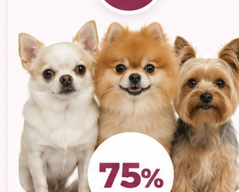
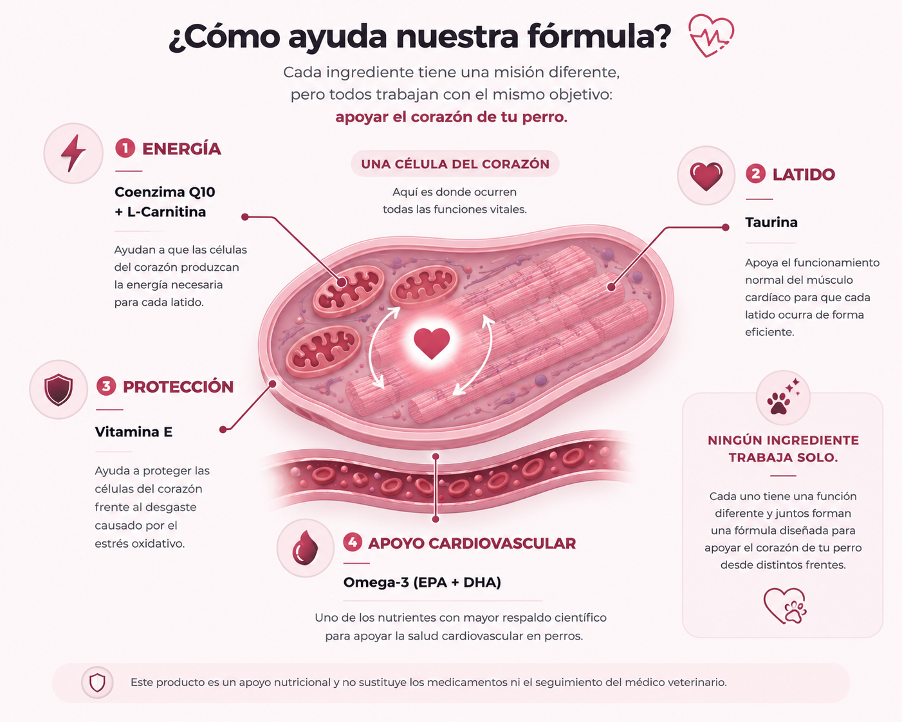
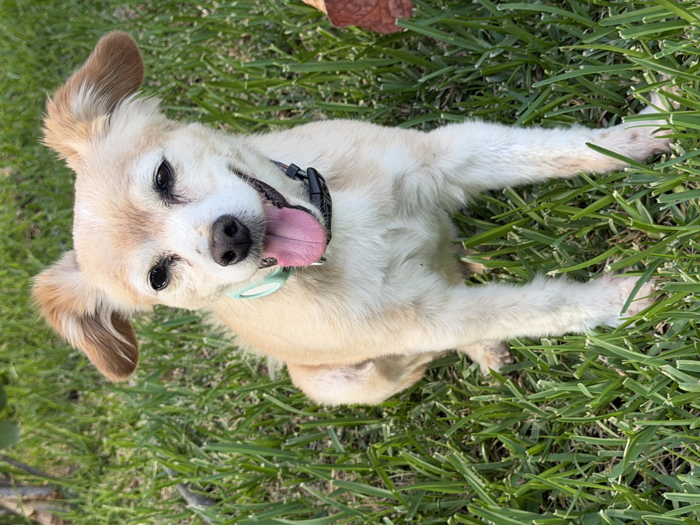

≈75%
De las cardiopatías caninas
corresponden a enfermedad valvular degenerativa, principalmente de la válvula mitral.
Fuente: consenso ACVIMFórmula integral con nutrientes seleccionados para apoyar la salud cardiovascular, la energía celular y la protección del corazón de tu perro.
Conocer estos datos ayuda a tomar decisiones a tiempo y a cuidar mejor la salud de nuestros perros.

corresponden a enfermedad valvular degenerativa, principalmente de la válvula mitral.
Fuente: consenso ACVIMLas razas pequeñas son las más predispuestas y el riesgo aumenta conforme avanza la edad.
Fuente: consenso ACVIMEn muchos perros el primer hallazgo ocurre durante una revisión veterinaria, antes de signos visibles.
Fuente: guía veterinariaNo todos hacen lo mismo. Juntos forman una estrategia nutricional integral.

Ingresa su peso y te mostramos la cantidad diaria y la duración aproximada de una bolsa de 150 g.
Rango actual: más de 5 kg y hasta 8 kg.

Ratilla tiene 12 años y vive con una enfermedad cardíaca. Aun así, sigue siendo un perro lleno de energía, felicidad y ganas de salir a correr.
Ya no puede correr como antes, pero se emociona mucho cuando vamos a salir. Yo lo adoro con todo mi corazón y quiero seguir viéndolo feliz durante todo el tiempo que podamos compartir.
Cardio+ fué creado porque quería desarrollar el suplemento que yo misma elegiría para apoyar al perro que amo.
No promete milagros ni sustituye su tratamiento. Busca sumar apoyo nutricional a los medicamentos, las revisiones y todos los cuidados que ya forman parte de su vida.
Selección de ingredientes y dosis basada en revisión de literatura y especificaciones de materia prima.
Permite mayor atención a la mezcla, uniformidad y trazabilidad.
Se revisan certificados de análisis y especificaciones de los ingredientes principales.
Apoyo nutricional cardiovascular inspirado en Ratilla.